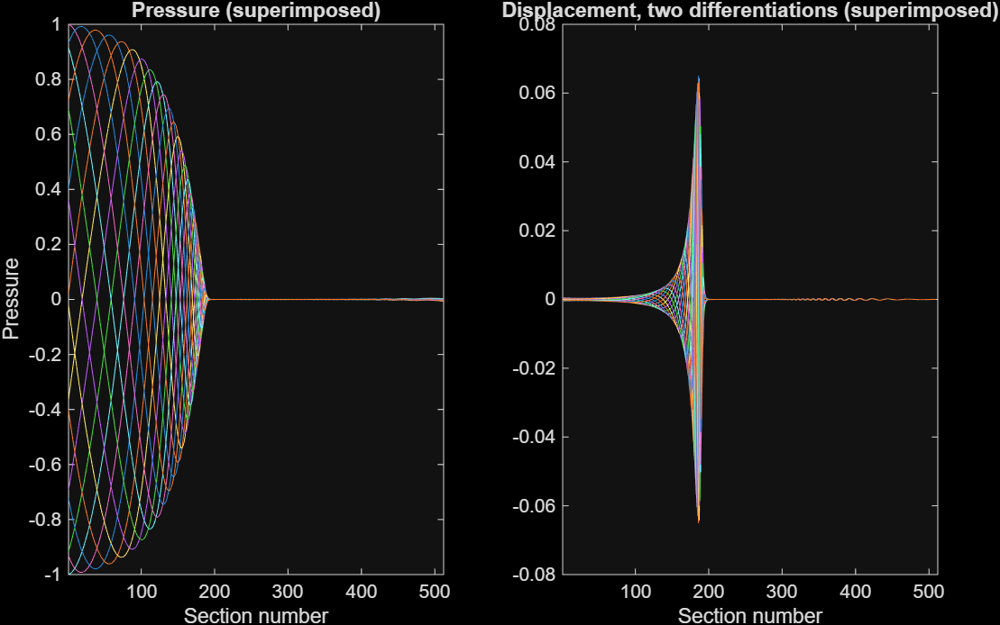

FIG. 01 · Travelling wave, 1 kHzCochlear Filter-Bank Model
A 512-section cascaded IIR model of the human cochlea in MATLAB, mapped from 7.5 kHz down to 35 Hz. Two stages of spatial differentiation narrow the response to a 1 kHz tone by ~92%, turning the model into a spectrum analyser in space.
- MATLAB
- IIR Filter Design
- DSP
- FFT Analysis